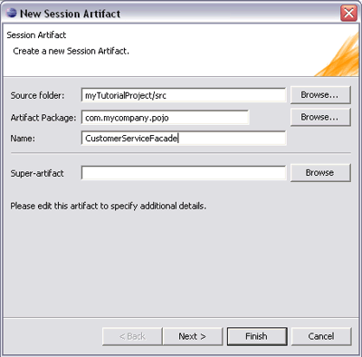
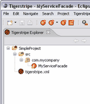
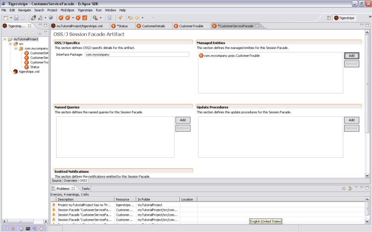
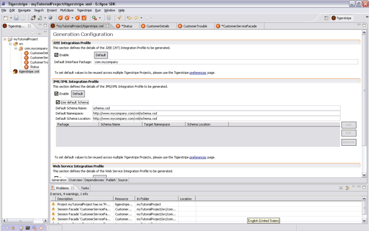
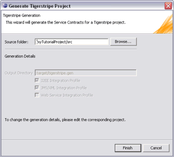
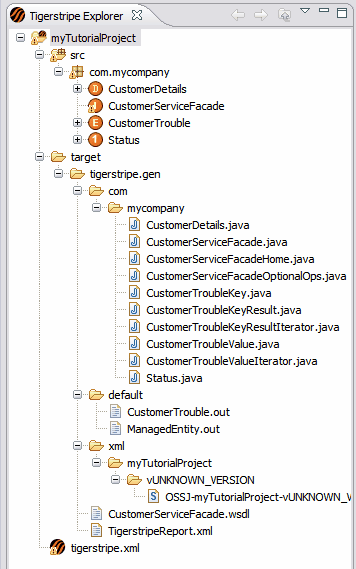

A Session Facade artifact represents an integration point within the defined Service Contract. An integration point (or Service Facade Artifact) models an end-point (for example, a Web Service). The first step of this tutorial is to create a simple end-point and generate a Web Service Definition (.wsdl).

Note: This is a multi-step dialog box however, for the purpose of this tutorial, you will only use a small portion of the dialog box to create the Session Facade Artifact. Please refer to Creating/Editing Session Facade Artifacts for more details about the New Session Artifact dialog box.

Note: Spaces and special characters are not allowed in an artifact name.
A method represents an operation available on a Service. An example of a method would be if you wanted to build a Service related to order handling, and you wanted to offer an operation on the Service to process orders.
For the purposes of this tutorial, consider the example of a Service Contract that is required to support the transfer of information about a customers trouble report. The report will have some attributes such as customer details, type of problem, and status. The customer trouble report will be modeled as a Managed Entity Artifact, which will have attributes to support these different types of information.
We have not yet defined any any Notifications, Queries, or Update Procedures, so at this point you can ignore those lists (and the warnings that appear saying that the interface has no declared Notifications etc).

Once you save your project, you can review all of the artifacts in the Tigerstripe Explorer. You may want to ensure that you have no errors in the Problems view.
Note: In this example, there will be warnings associated with the Interface because this example is not completely realistic.
In Tigerstripe Workbench, project generation is handled through Tigerstripe plug-ins. Although advanced users can create their own plug-ins, by default Tigerstripe Workbench ships with three basic plug-ins:
Before you can generate your Service Contract, you need to select the target Integration Profiles . For this example, select the J2EE and XML profiles.


The Service Contract specification has now been generated. The corresponding files have been generated in a newly created target folder in the Tigerstripe Explorer. You can review the generated code by double-clicking on the corresponding files.

Tutorial Overview
Creating a New Project
Adding ArtifactsI
Common Procedures
 The next section describes some of these common procedures.
The next section describes some of these common procedures.